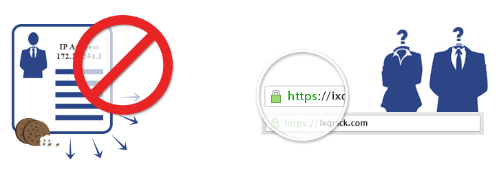
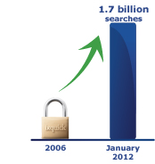

Informacje o wyszukiwarce Ixquick
Wyszukiwarka Ixquick (www.ixquick.com) to najbardziej prywatna wyszukiwarka na świecie. Koncentruje się na zapewnianiu doskonałych wyników wyszukiwania przy zachowaniu najwyższego stopnia prywatności. W Stanach Zjednoczonych wyszukiwarka Ixquick znana jest jako StartPage (www.startpage.com).
Nie przechowujemy żadnych adresów IP, nie gromadzimy ani nie przekazujemy żadnych danych osobowych stronom trzecim i nie umieszczamy umożliwiających identyfikację plików cookie w przeglądarce użytkownika. Ixquick oferuje również bezpieczne szyfrowanie SSL, opcję proxy, która umożliwia anonimowe przeglądanie sieci, pełną certyfikację stron trzecich i wiele innych funkcji zapewniających prywatność..
Historia wyszukiwarki Ixquick
Search
Engine Watch
Engine Watch
Wyszukiwarka Ixquick została stworzona i uruchomiona w 1998 roku przez Davida Bodnicka w Nowym Jorku. W roku 2000 została nabyta przez Surfboard Holding B.V., prywatną holenderską korporację, która zajmuje się wyłącznie obsługą wyszukiwarki Ixquick i StartPage. Od momentu powstania w 1998 roku, Ixquick stale się rozwija, głównie dzięki poleceniom przekazywanym ustnie. Do naszego rozwoju przyczyniły się przyznawane nam nagrody, w tym:
- European Privacy Seal – europejska etykieta prywatności przyznawana przez organ certyfikujący Europrise
- Nagroda dla najlepszej metawyszukiwarki przyznana przez Search Engine Watch w 2000, 2002 i 2004 roku
Popularność wyszukiwarek Ixquick i StartPage stale rośnie, odkąd w 2006 roku stały się pierwszymi wyszukiwarkami, zapewniającymi użytkownikom prywatność. Do września 2013 roku, Ixquick i StartPage obsłużyły ponad 3,2 mld wyszukiwań. Obecnie obsługujemy średnio około 4,5 mln wyszukiwań dziennie. Nasze statystyki dotyczące ruchu można śledzić tutaj.
Prywatność!
Ixquick ma wiodącą w branży Politykę prywatności:
- Brak rejestracji adresów IP użytkowników.
- Brak umożliwiających identyfikację plików cookie.
- Brak gromadzenia danych osobowych.
- Brak udostępniania danych osobowych stronom trzecim.
- Bezpieczne, szyfrowane połączenia (HTTPS/SSL).
- Bezpłatna usługa proxy, umożliwiająca anonimowe przeglądanie stron internetowych.

Więcej szczegółów znaleźć można na naszej stronie z informacjami o prywatności lub w opisie Polityki prywatności Ixquick.
Prywatność – informacje ogólne
Internet zawiera ogromne ilości informacji, które umożliwiają niespotykany wcześniej dostęp do zakupów, najnowszych wiadomości, rozrywki i wielu innych. Wyszukiwarki pomagają nam poruszać się wśród tego ogromu danych, abyśmy mogli znaleźć to, czego szukamy szybko i sprawnie. Taka wygoda ma jednak swoją cenę. Poważnym potencjalnym zagrożeniem związanym z korzystaniem z wyszukiwarek jest utrata prywatności.
W 2005 roku Ixquick przeprowadził audyt, aby określić zobowiązania firmy. Jednym z szokujących odkryć było to, że zgromadziliśmy ogromną ilość poufnych informacji dotyczących naszych użytkowników. Tak jak inne wyszukiwarki, przechowywaliśmy na przykład wyszukiwane frazy, godziny i daty odwiedzin, dane dotyczące łącz, w które zdecydowali się kliknąć użytkownicy, ich adresy IP oraz pliki cookie z identyfikatorami użytkowników. Techniczne powody gromadzenia danych były proste i są niestety powszechne w dzisiejszym środowisku informatycznym: „Nie kosztuje to wiele, jest bardzo proste, a dane mogą się przydać w przyszłości”.
„Wykorzystanie prywatnych informacji”
Jednak kiedy spojrzeliśmy na tę górę danych, bardziej niż wartościowy kapitał zaczęła przypominać problem związany z zachowaniem ich poufności. Nigdy nie sprzedaliśmy takich informacji ani nie wykorzystaliśmy ich w celach komercyjnych. Ponieważ jesteśmy niezależną firmą skupiającą się wyłącznie na wyszukiwaniach, nie interesowała nas kwestia powiązania danych użytkowników z innymi oferowanymi przez nas usługami. Podsumowując, mieliśmy bazę danych pełną informacji o użytkownikach, których ani nie potrzebowaliśmy, ani nie chcieliśmy.
„Wykorzystanie prywatnych informacji”
"„Zadaliśmy sobie pytanie dlaczego przechowujemy te wszystkie poufne informacje i zdaliśmy sobie sprawę, że nie ma ku temu dobrego powodu”"

Uświadomienie sobie tego pozwoliło firmie obrać nowy odważny kierunek i od tamtej pory naszym najwyższym priorytetem stała się ochrona prywatności naszych użytkowników. W czerwcu 2006 roku wyczyściliśmy naszą bazę danych i wstecznie usunęliśmy wszystkie adresy IP i inne przechowywane dane wyszukiwania. Zaczęliśmy usuwać nowe adresy IP w ciągu 48 godzin. Od stycznia 2009 roku zupełnie przestaliśmy rejestrować adresy IP.

Zoptymalizowaliśmy nasze procesy wyszukiwania tak, aby gwarantować prywatność oraz dopilnować, aby dane osobowe naszych użytkowników nigdy nie były gromadzone. Pilnujemy również, aby dane wyszukiwań użytkownika nie były gromadzone przez inne podmioty. Jesteśmy jedyną wiodącą wyszukiwarką oferującą szyfrowanie SSL (Secure Socket Layer) lub HTTPS, aby zapobiec śledzeniu wyszukiwanych fraz przez dostawców usług internetowych (ISP) lub pozbawionych skrupułów dostawców sieci WiFi i hakerów. W ramach uznania dla tej wyjątkowej funkcji, Ixquick otrzymał pierwszą Europejską Nagrodę w dziedzinie Ochrony Prywatności od Europejskiego Inspektora Ochrony Danych Petera Hustinxa w lipcu 2008 roku.
Nasz model biznesowy opiera się na doskonałych możliwościach wyszukiwania w połączeniu z całkowitą prywatnością. Rozwijając się, Ixquick nadal będzie oferować nowatorskie funkcje i usługi związane z zachowaniem poufności danych. Nasza usługa proxy pozwala użytkownikom odwiedzać strony podmiotów trzecich anonimowo poprzez serwery Ixquick bez ryzyka, że będą śledzeni przez te strony. Testujemy również sposoby na zapewnienie prawdziwie bezpiecznych usług e-mailowych. W miarę jak Internet będzie ewoluował, Ixquick będzie trzymać się swojej misji ochrony prywatności.
Doskonałe wyniki wyszukiwania
Ixquick to zaawansowana metawyszukiwarka, która przeszukuje jednocześnie wiele popularnych wyszukiwarek i internetowych baz danych, aby zgromadzić i wyświetlić najbardziej wyczerpujące i trafne wyniki. W przeciwieństwie do innych wyszukiwarek, takich jak Google, Yahoo czy Bing, Ixquick przeszukuje więcej zasobów internetowych niż jakakolwiek samodzielna wyszukiwarka. Łącząc wyniki wyszukiwania, Ixquick pomaga użytkownikom uniknąć manipulacji komercyjnych niektórych stron, zwanych „maskowaniem”, dzięki którym w poszczególnych wyszukiwarkach pojawiają się wśród najtrafniejszych wyników.
Ixquick stale oferuje nowe funkcje, aby zwiększyć przydatność i moc swojej wyszukiwarki, w tym funkcję podświetlania, aby podkreślić wyszukiwaną frazę na stronie z wynikami, Universal Power Search (uniwersalne wyszukiwanie zaawansowane), Global Search (wyszukiwanie globalne) i Power Refinement (wyszukiwanie według zawężonych kryteriów). Ixquick zapewnia również numery telefonów i adresy na całym świecie poprzez Międzynarodowy Katalog Numerów Telefonów, a użytkownicy mogą wyszukiwać filmy wideo pośród 18 milionów godzin nagrań poprzez Wyszukiwanie wideo.

Niezależna firma
Ixquick jest własnością prywatnej korporacji, Surfboard Holding, BV, jest zatem całkowicie niezależny od wpływów podmiotów zewnętrznych, które mogłyby dążyć do wykorzystania danych użytkownika. Ixquick i StartPage nie są stowarzyszone z żadną narodową czy międzynarodową organizacją, korporacją, spółką handlową, rządem ani agencją wywiadu. Oczywiście Ixquick ma obowiązek przestrzegać wymogów prawnych zobowiązujących firmę do przekazania informacji odpowiednim władzom, lecz ponieważ nie przechowujemy żadnych danych osobowych, nie posiadamy danych, które moglibyśmy dostarczyć. Być może właśnie dlatego Ixquick i StartPage nigdy nie zostały wezwane do dostarczenia żadnych danych użytkowników.
Nasz zespół

Od momentu powstania firma dążyła do pozostania niewielkim i elastycznym przedsiębiorstwem, aby pielęgnować ducha kreatywności i innowacji, jakiego tchnął w nią jej założyciel David Bodnick. Mamy siedziby w trzech krajach, zatrudniające pracowników i wolontariuszy w Holandii, USA i Indiach. Zarządzanie stroną oraz prace administracyjne i związane z finansami prowadzone są głównie w Holandii, architekturą techniczną zajmuje się nasze biuro w Nowym Jorku, a grupa wysoko wykwalifikowanych inżynierów oprogramowania w Nowym Delhi w Indiach zajmuje się konserwacją strony, programowaniem i rozwojem.
Obecnie zespół zarządzający to: David Bodnick, założyciel firmy i specjalista ds. technologii; dr Katherine Albrecht, która zajmuje się kontaktami z mediami i inicjatywami marketingowymi dla Ixquick i StartPage w USA; Robert Beens, dyrektor generalny; Sally Page, wiceprezes ds. operacyjnych; oraz Alex van Eesteren, wiceprezes ds. marketingu i sprzedaży. Nasze serwery, których liczba ciągle rośnie, znajdują się w Amsterdamie i Haarlemie w Holandii oraz w Palo Alto, Nowym Jorku i Miami w Stanach Zjednoczonych.
Konkurencja
Naszą konkurencję stanowią wyszukiwarki oferujące podobne usługi wyszukiwania, jak Ixquick. Lwia część rynku wyszukiwania znajduje się oczywiście w rękach wyszukiwarki Google, a także Yahoo i Bing. W nieco węższym sektorze metawyszukiwarek, naszym głównym konkurentem jest Infospace (właściciel wyszukiwarek Dogpile, WebCrawler i MetaCrawler). Jednak jeśli chodzi o prywatność, Ixquick nie ma rzeczywistej konkurencji, gdyż jesteśmy jedyną wyszukiwarką na świecie oferującą w pełni bezpieczne wyszukiwanie z certyfikacją zewnętrzną.
Udziały w rynku

Odkąd w 2006 roku skupiliśmy się na ochronie prywatności, udało nam się przyciągnąć rzeszę lojalnych użytkowników. Do grudnia 2013 roku obsłużyliśmy ponad 3,7 mld wyszukiwań z zachowaniem prywatności. W ciągu mniej niż 2 lat nasz ruch wzrósł ponad czterokrotnie.
Nasze statystyki dotyczące ruchu można śledzić tutaj.
Kwestie finansowe
Ixquick jest firmą znajdującą się w rękach prywatnych, nie musimy zatem publikować sprawozdań finansowych. Możemy ujawnić, że jesteśmy w dobrej kondycji finansowej i przez ostatnie pięć lat osiągaliśmy zyski. Aby ułatwić korzystanie ze swoich usług, Ixquick wybrał czysty i prosty interfejs użytkownika z minimalną liczbą reklam. Niektóre strony z wynikami wyświetlają trafne wyniki sponsorowane, które są wyraźnie oznaczone u góry strony, a ich liczba jest ograniczona do trzech na stronę. Prezentacja tych reklam została dokładnie przemyślana, aby chronić prywatność użytkowników. Zaznaczamy, że Ixquick nigdy nie udostępnia danych osobowych użytkowników żadnym stronom trzecim.
StartPage (by Ixquick)
Ponieważ nazwa Ixquick może być nieco trudna do zapamiętania i zapisania, poproszono nas o zmianę nazwy na łatwiejszą. Z przyjemnością na to przystaliśmy i uruchomiliśmy StartPage (www.startpage.com) w 2009 roku. Strona StartPage obsługiwana jest przez wyszukiwarkę Ixquick i stanowi dokładnie taki sam produkt, zapewniający taką samą prywatność, jak Ixquick.

Perspektywy na przyszłość
Prywatność wyszukiwarek to bardzo istotny temat, tym bardziej po zaskakujących informacjach ujawnionych przez Eda Snowdena w 2013 roku. W roku 2014 i w przyszłości Ixquick i StartPage spodziewają się dalszego rozszerzania swoich usług związanych z ochroną prywatności, na które jest spore zapotrzebowanie. StartMail zapewni niezawodne, szyfrowane usługi poczty internetowej. Rozważamy również wiele innych produktów związanych z udoskonaleniem zakresu ochrony poufności danych. Uważamy, że Ixquick i StartPage stanowią wspaniałe zasoby i jesteśmy dumni, że możemy zapewnić użytkownikom doskonałe wyszukiwarki, które chronią ich prywatność. „Uważamy, że Ixquick i StartPage stanowią wspaniałe zasoby”.
"Uważamy, że Ixquick i StartPage to wspaniałe rozwiązania."